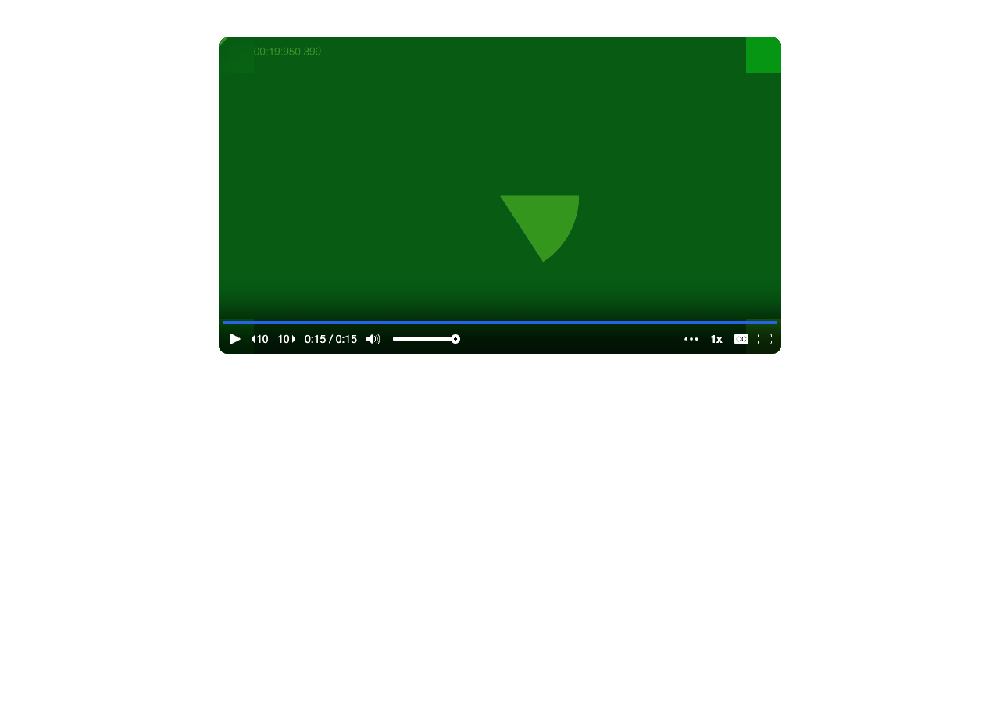
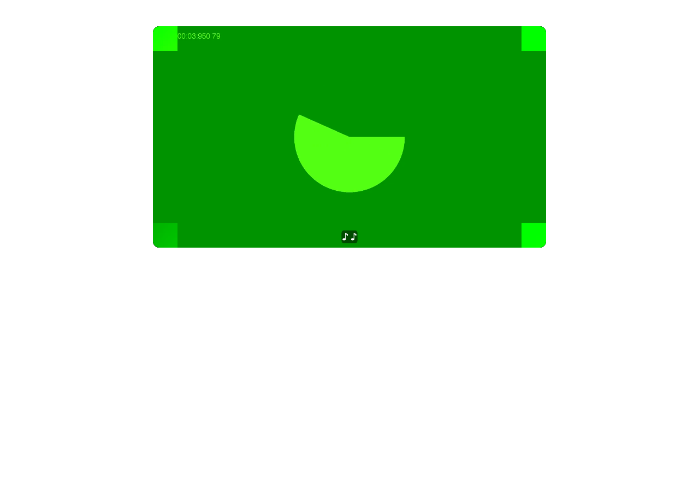

PASS. Verified staging commit 03ba3ec6 via /__deploy-info. Tested in visible Chromium with fake camera/microphone and QA login. No source files changed. 1. PASS: Recorded 30.03 s; library card played, currentTime 5.10 s and paused=false. Screenshot: 01-library-playing.png. 2. PASS: Trimmed 5–20 s. Save took 2.895 s, measured from clicking Trim to “Saving changes…” clearing. Clicked card Play 0.176 s later, without reload. Played 15.002 s clip; no “Playback failed.” Screenshot: 02-library.png. 3. PASS: Private share opened 2.202 s after saving cleared. Played the 15.003 s clip to its end. Screenshot: 02-private.png. 4. PASS: Re-trimmed 3–25 s. Save took 4.375 s. Clicked Play 0.126 s later, without reload. Card played 22.000 s; private share played 22.026 s. No playback failure. Screenshots: 04-library.png, 04-private.png. 5. PASS: Deleted video; after reload library count returned to 241, and share had no video. Screenshot: 05-deleted.png. All captured stream.mux.com manifests returned HTTP 200; no 412. Screenshots, timings.json, observations.json and network.json are under .audit/manual-mux-test-trim3/. An earlier attempt was discarded after a selector clicked another card. Its temporary video was deleted; all results above are from the replacement recording.

